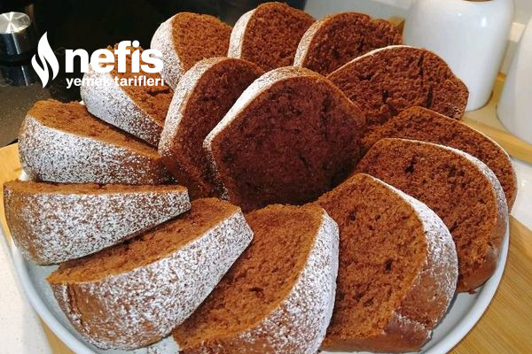

Trending Recipes

Strawberry jam (I've been making it for years) Here is a strawberry jam recipe that keeps you in full season.I make it with these measurements in spring and autumn is enough for us.1 big jar and a bowl are filled.you can watch the video making stages and consistency from my insta address.
Ingredients for the Strawberry Jam Recipe (I've Been Making It for Years with These Measures)
- 1.5 kg of berries
- 6 cups granulated sugar
- The juice of a quarter lemon
How to Make a Strawberry Jam (I've Been Making It for Years with These Measures) Recipe?
- Let's drizzle the sugar over the strawberries we have washed and extracted and let them stand overnight. Let's stir occasionally the sugar settles to the bottom.
- The next day we take it to a large saucepan and boil over medium heat.
- Let's take the foam from it continuously, when it starts to boil, there is no need to take foam anymore, those foams are extinguished.
- Let it boil for 45 minutes and squeeze the lemon juice towards the end and boil for another 5 minutes and turn it off. (It has happened if you put water in a teacup and drip from the juice of the jam and it does not dissipate immediately.) When the first heat comes out, let's take it in the jar.
- When it warms up, close the lid and lift it to the closet.
- As you stay in the closet, its consistency will darken. By scrolling you can see in the pictures the stages of construction.bon appetit üçìüçìüçìüçì . üçìüçìüçìüçì

Extremely Delicious Pudding Cotton Cake
Ingredients for Extremely Delicious Pudding Cotton Cake Recipe
- 3 eggs
- 1 cup sugar
- 1 cup of milk
- 1 cup of oil
- 2.5 cups flour
- 1 packet of baking soda
- 1 packet of vanilla
- 1 packet of chocolate pudding (powdered)
How to Make an Extremely Delicious Pudding Cotton Cake Recipe?
- First, grease the cake mold with butter or margarine and flour it and reserve it in the refrigerator.
- Beat the eggs and sugar well.
- Add oil and milk to it and stir a little.
- Sift and add the flour, baking powder and vanilla, add the pudding powder to it and beat it.
- Take the cake mold out of the fridge and pour the cake mortar into it and bake in a 180 degree oven for 35 minutes.
- Remove from the oven and when the initial temperature is removed, put the serving plate on it and turn it over.
- Once the cake has cooled, sprinkle with icing sugar, slice it and serve.
Tart Cake (Tiramisu Taste)Hello everyone with my tart cake in tiramisu flavor, be sure to save it to try a great flavor with its fluffy cake and cream.
Ingredients for Tart Cake (Tiramisu Taste) Recipe
- 2 eggs
- 1 cup sugar
- 1 cup of milk
- 1 cup of oil
- 2 spoons of cocoa
- 1 baking soda
- Vanilla
- 1.5 cups of flour
For the cream;
- 2.5 cups of milk
- 1 cup sugar
- 1 tablespoon flour
- 1 tablespoon starch
- 1 egg yolk
- 1 vanilla
- 2 tablespoons of labneh
To soak the cake;
- Half a teacup of milk
- 1 teaspoon sugar
|
|
|